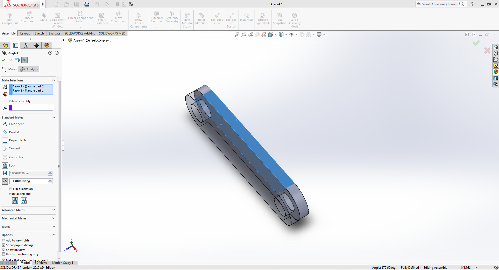
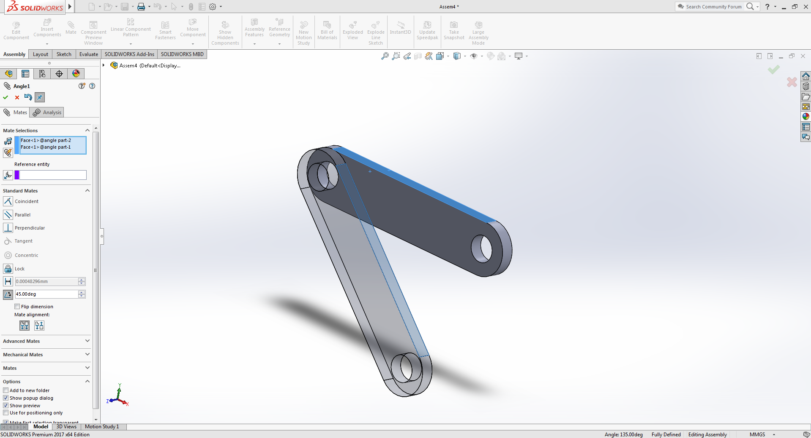
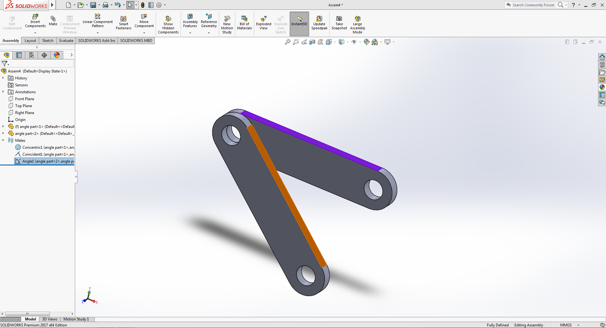
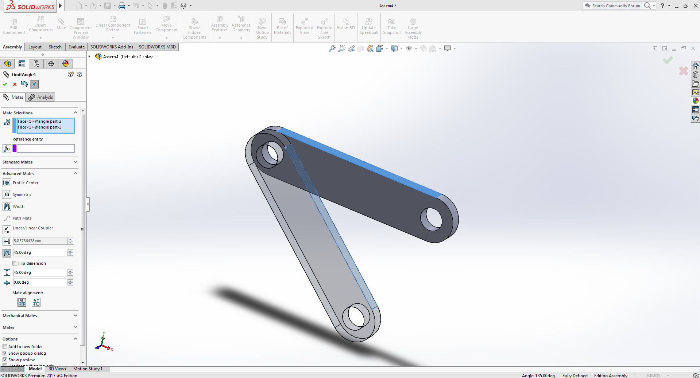

Angle & Advance Angle Mate
Places components at a desired angle from another component. Can select an edge, face, or plane.
Example:
Download Example parts

-
Follow the tutorial of Coincident Mate part to learn opening part files in assembly mode.
Same part file is used as in the previous sectionopen the part file and duplicate it by pressing ctrl key and dragging any face of the selected part in any direction
Click on the image to activate the zoom functionality,for better viewing use devices with bigger screens
-
Select the top edges/faces of both the part by while holding the ctrl key.
 -
Click on the Mate button given in the top ribbon section of SW.
After that select the Angle mate option given under standard mate section.
assign a angular degree value between the given faces, In our example we have taken 45 degrees
 -
The angle mate will restrict the rotational movement between the selected the faces/edges.
To allow rotational movement between the edges edit the previously created angle mate by selecting the Mate option that you will find in the binary tree tab which will be located on left side of the view tab. -
Now search for previously created angle mate option under the Mate dropdown.
Right click on the selected option and choose edit feature button
This will reopen the mate tab on the left side of the view window
now select the Limit Angle mate option under the Advanced Mate dropdown.
after that assign the maximum and minimum degrees of rotation value.
In our example we have assigned 45 and 0 degress -
Here's a video tutorial of current example